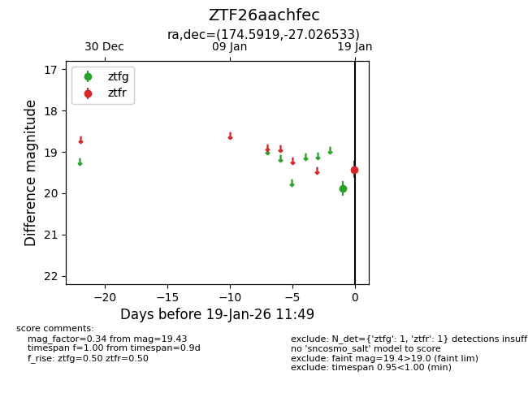
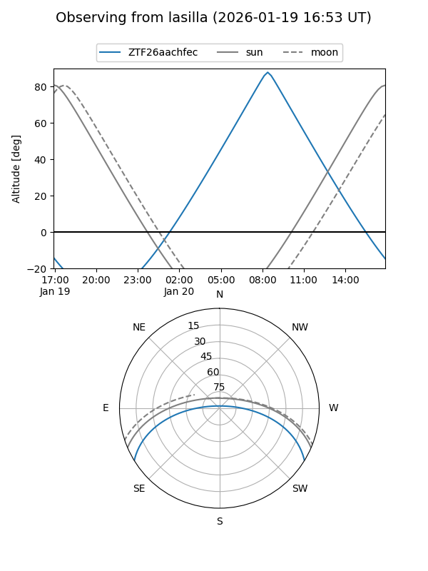
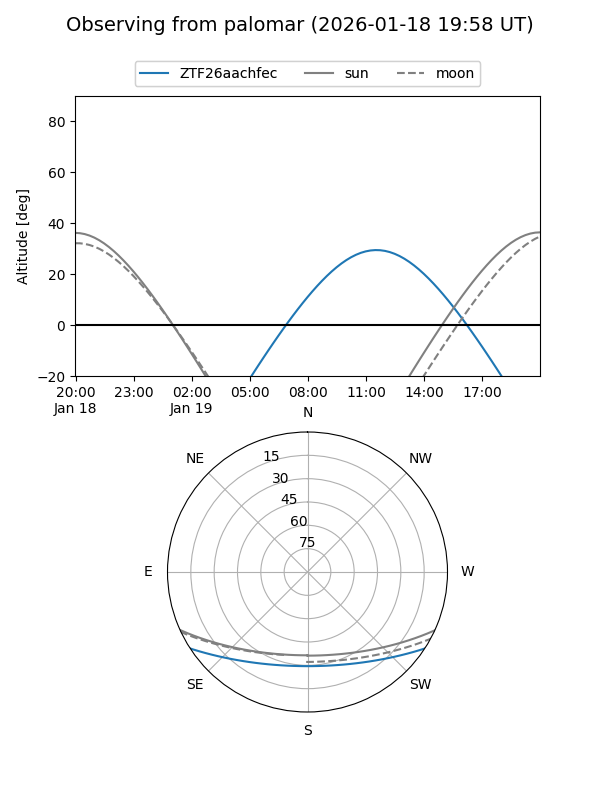

ZTF26aachfec
Target ZTF26aachfec at 2026-01-19 11:51
Aliases and brokers:
FINK: link
Lasair: link
ALeRCE: link
alt names
ZTF26aachfec (ztf,fink_ztf)
Coordinates:
equatorial (ra, dec) = 174.5919,-27.02653
equatorial (HMS+DMS) = 11:38:22.05,-27:01:35.52
galactic (l, b) = (283.4690,+33.06860)
Flags:
Photometry:
last ztfg=19.88, ztfr=19.43
1 ztfg, 1 ztfr detections
Lightcurve

Visibility


Additional plots